Spentrup 1
Grobkörniger, hellroter Granit
Größe: 54 x 54 cm
Dicke oben: 15 cm
unten: 40 cm
Runenhöhe: 7 / 9 cm
Runeninschrift :
... diese Runen ... (lange) leben.
47 - Spentrup 1 - Letztes Update 12.09.2025
Listennummer : DR 119 / DK MJy 50
| Navidaten: 56.54005 10.033183 oder: Hastrupvej 1, 8981 Spentrup |
Transliteration: ... | þasi : run-... | ...ki : lifa :
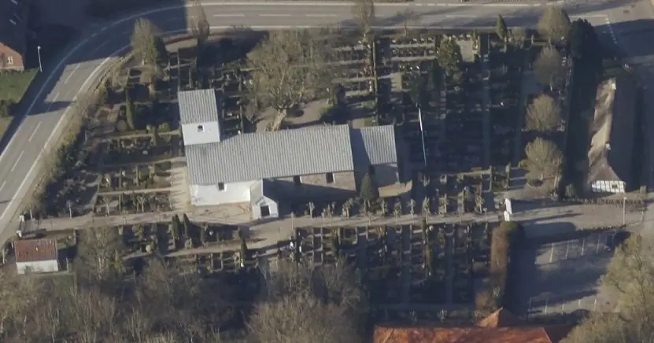
Das ist ein Luftfoto vom 01.04.2023 von Skråfoto das die Kirche von Spentrup zeigt. Skråfoto ist eine Webanwendung, die von Klimadatastyrelsen weltweit kostenlos bereitgestellt wird - Freie Nutzung unter Beachtung der Lizenz: CC BY 4.0. Die Aufnahmen werden alle zwei Jahre erneuert und neben einer Senkrechtaufnahme wird ein Schrägbild aus jeder Himmelsrichtung angeboten, das man über eine Adresssuche aufrufen kann.
Bei der Restauration der Kirche von Spentrup im Jahre 1884 wurde das Bruchstück dieses Runensteines entdeckt. Es war zu einem Quader zurechtgehauen und in der nordöstlichen Ecke des Kirchenschiffs, unmittelbar über dem Sockel, als Eckstein der untersten Steinschicht eingesetzt gewesen. Die Inschriftseite war nach innen gewandt, so dass er nicht früher entdeckt worden war. Er wurde nach seiner Entdeckung im Kirchhof abgelegt, da sich der Pfarrer Jens Vilhelm Hansen (*19.10.1822 - 09.01.1897, Pfarrer in Spentrup von 26.07.1880-1895 - Infos S. 164 in der pdf-Datei - link-LIVES) gegen eine Aufbewahrung in der Kirche ausgesprochen hatte.
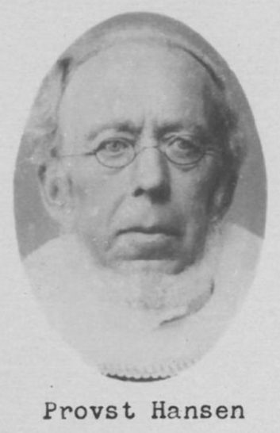
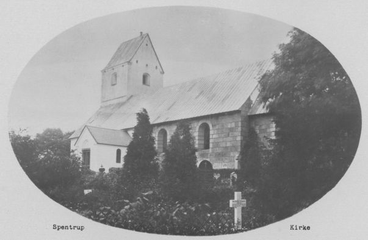
Bildquelle: Sognekort - Lizenz: Public Domain - Aufnahmedatum unbekanntDer Pfarrer verstarb am Samstag, 09.01.1897, in Randers wie die Tageszeitung "Randers Amtsavis" in ihrer Ausgabe vom Montag, 11. Januar 1897, vermeldete (Artikel S. 2, unten, 2. Spalte von rechts).
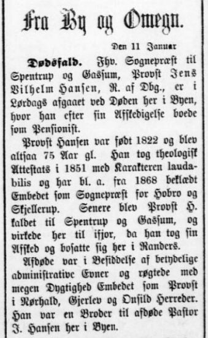
Prof. Ludv. F. A. Wimmer (siehe unten) der den Runenstein 1892 im Freien vorfand, regte aus konservatorischen Gründen eine Übergabe an das Nationalmuseum in Kopenhagen oder das Museum Randers an. Irgendwann wurde er aber doch in der Kirche in Spentrup aufgestellt, wo er sich noch heute im Waffenhaus, links vor der Tür zum Kirchenraum, befindet.
Im Nationalarchiv in Kopenhagen wird die schriftliche Fundmitteilung von Justizrat Frants Hvass (*01.10.1824 - 12.12.1890, Mitglied der Jütländischen Historisch-Topographischen Gesellschaft aus Fredriksdal bei Randers - link-LIVES) - Bestattungsprotokoll
 Bildquelle:
https://slaegtsbibliotek.dk/911086.pdf - Seite 6 -
Bildquelle:
https://slaegtsbibliotek.dk/911086.pdf - Seite 6 -
vom 21.07.1884 mit seiner Zeichnung verwahrt. Den Bericht bekam ich am 12.09.2025 auf Anforderung vom Antikvarisk -Topografisk Arkiv in Kopenhagen - Dánial Magnusson Haraldsen - Studentermedhjælper / Student Assistant - zugesandt.


Die Zeichnung war aber leider nicht mehr aufzufinden, obwohl sie in deren Zeichnungsübersicht aufgeführt ist.
Die Inschrift wird von den Runologen auf die Zeit von 970 - 1020 datiert. Die bruchstückhafte Inschrift verläuft in zwei Runenbändern und wird - so wie er heute liegt - in dem diagonalen Band von oben nach unten und in dem waagrechten Band von rechts nach links gelesen.
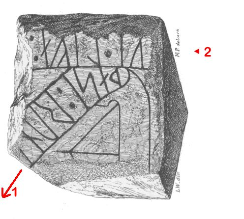
Außer der Inschrift ist auf der gleichen Seite auch eine stilisierte Schiffsdarstellung eingeritzt worden. Das Schiff ist von der Mastspitze bis zum Kiel 29 cm und vom Mast zum Vorsteven 30,5 cm lang.
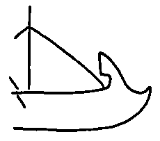
Der Runenstein Spentrup 2 (Jennum-Stein) befindet sich im Kulturhistorischen Museum in Randers.
Die Kirche ist normalerweise Montags-Samstags zwischen 08.00 und 16.00 Uhr geöffnet (ohne Gewähr!).
Erstmals war im am Mittwoch, 29.08.1990, an dieser Kirche und konnte dieses Dia anfertigen, das ich gerade über einem Lichtpult mit dem Smartphone abfotografiert/digitalisiert habe.
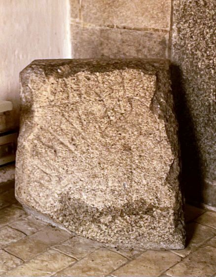
Bei meinem Besuch am 26.08.2016 - ein normaler Freitag - war die Kirche leider geschlossen, sodass ich nur Fotos der Kirche von außen machen konnte:


Im Rahmen meiner 2022er Jütland Wikinger Tour war ich am Mittwoch, 15.06.2022, vor Ort und konnte dieses Fotos machen.


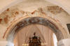 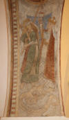 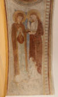 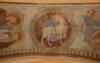 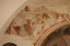 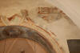


Zu diesen Kalkmalereien kann man über diesen Link nähere Informationen in dänischer Sprache erhalten.
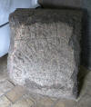 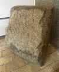 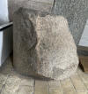 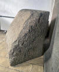 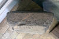


Bei normaler Beleuchtung bekommt man die Runenzeichen und die Schiffsritzung einfach nicht ordentlich fotografisch hin. Da müsste ich mal einen Akku LED Scheinwerfer zur Erzeugung eines seitlichen Streiflichtes mitnehmen! Was schrieb Erik Moltke (*04.04.1901 - 19.10.1984, Runologe, Historiker) in seinem Buch Runes and there Origins - 1985 - S. 17 (übersetzt): "...was sie brauchen ist ein gutes Licht von der Seite..."
In dem Runenwerk von Prof. Ludv. F. A. Wimmer (*07.02.1839 - 29.04.1920, Philologe und Runenforscher - link-LIVES - Politiets registerblade - Bestattungsprotokoll)
 Bildquelle:
Fotografie zw. 1877-1900 von Fotograf Hansen & Weller
-
Det Kgl. Biblioteks billedsamling - Lizenz:
Public Domain
Bildquelle:
Fotografie zw. 1877-1900 von Fotograf Hansen & Weller
-
Det Kgl. Biblioteks billedsamling - Lizenz:
Public Domain
De danske runemindesmærker undersøgte og tolkede af Ludv. F. A. Wimmer, Andet Bind, Runestenene i Jylland og på øerne. 1899-1901 - Nr. 21, S. 130ff. findet sich diese Zeichnung von Prof. Julius Magnus Petersen (*04.09.1827 - 31.01.1917, Archäologischer Zeichner und Restaurator - link-LIVES - Bestattungsprotokoll)
 Bildquelle: Fotografie
von 1903 von Fotograf Marius Christensen
(*24.06.1874 -
25.06.1907) -
Det Kgl. Biblioteks billedsamling - Lizenz:
Public Domain
Bildquelle: Fotografie
von 1903 von Fotograf Marius Christensen
(*24.06.1874 -
25.06.1907) -
Det Kgl. Biblioteks billedsamling - Lizenz:
Public Domain
die ich hier wiedergeben möchte - eigene Scans aus der in meinem Besitz befindlichen Ausgabe:
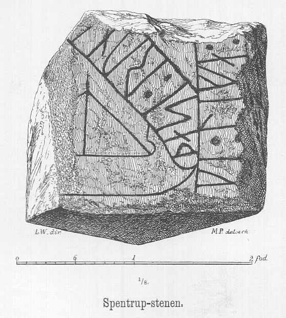
Prof. Ludv. F. A. Wimmer hat den Runenstein persönlich vor Ort am 12. Juli 1892 untersucht.
Außerdem hat Prof. Ludv. F. A. Wimmer in seinem Werk auf S. 132 diese Zeichnung veröffentlicht, die seine Idee wiedergibt, wie der Stein vielleicht einmal ausgesehen haben könnte, bevor er leider zum Baustein zerschlagen wurde.
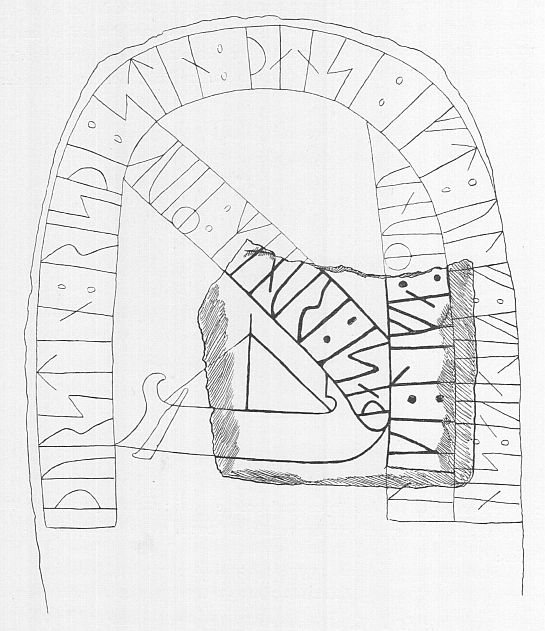
Prof. Ludv. F. A. Wimmer führt aus, dass der Stein für ihn Ähnlichkeit mit dem schwedischen Runenstein von Tullstorp/Schonen (DR 271) hat.
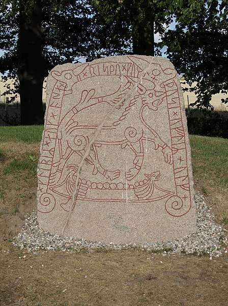
Quelle: Wikimedia Commons - Jorchr - Lizenz: CC BY-SA 4.0
Andere dänische Runensteine mit Schiffsdarstellungen finden sich in Hørdum, Farsø, Hjermind und Sønder Kirkeby.
Prof. Ludv. F. A. Wimmer hat seine jahrelangen Aufzeichnungen der "Kgl. Bibliotek" in Kopenhagen überlassen. Ein Verzeichnis darüber wurde 1915 in Buchform herausgegeben - "Collectio runologica Wimmeriana: Fortegnelse over Ludv. F. A. Wimmers runologiske o. a. Samlinger i Det kgl. Bibliotek"
In seinen Unterlagen in der Bibliothek findet sich unter "III - Originaltegninger af de danske Runemindesmærker, udførte paa Undersøgelsesrejserne af Magn. Petersen og kontrollerede paa Stedet af Ludv. Wimmer, samt Prøvetryk af de paa Grundlag af de nævnte Tegninger, Aftryk o. s. v. til De danske Runemindesmærker" udførte Afbildninger med Wimmers Rettelser" unter der Nummer 35 diese Zeichnung von Magnus Petersen, die er auf "Juli 1892" datiert hat. Darüber hat er noch den Steinquerschnitt mit alten dänischen Maßangaben notiert.


Erik Moltke (*04.04.1901 - 19.10.1984, Runologe, Historiker)
 Bildquelle: Scan von Buchumschlag "Runerne i Danmark og ders
oprindelse" - Erik Moltke - 1976 - Lizenz:
CC-BY-SA
Bildquelle: Scan von Buchumschlag "Runerne i Danmark og ders
oprindelse" - Erik Moltke - 1976 - Lizenz:
CC-BY-SA
hat diese sw Aufnahme am 14.07.1930 gefertigt.
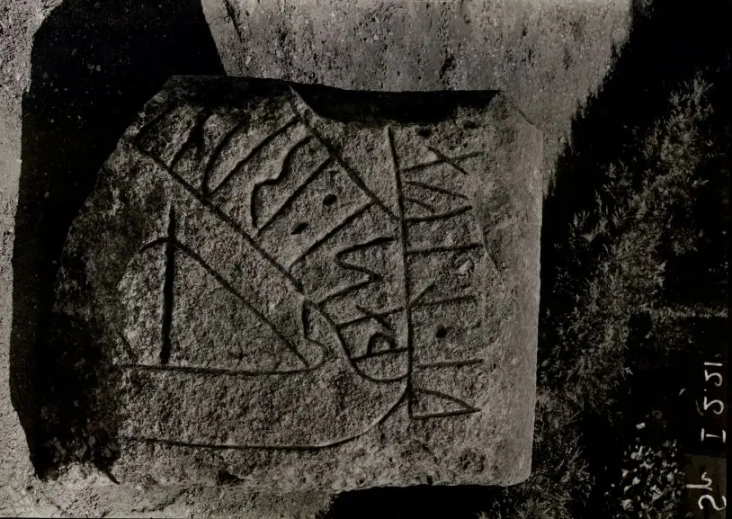
Quelle: Digitale Sammlung des Nationalmuseums in Kopenhagen - Lizenz: CC-BY-SA
Im Vorfeld zu dem 2016 erschienenen Buch von Lisbeth M. Imer (*1973, Runologin am Nationalmuseum Kopenhagen) "Danmarks Runesten - en fortælling" reiste sie mit dem Fotografen Roberto Fortuna zur Bestandsaufnahme durch die Lande. Dieser hat die Runensteine mit Schräglicht aufgenommen und darüber wirklich herausragende Fotos erzielt. Diese Fotografien stammen vom 08. März 2012.
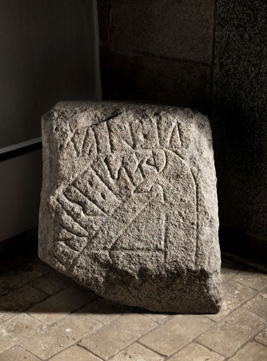
Quelle: Digitale Sammlung des Nationalmuseums in Kopenhagen - Lizenz: CC-BY-SA
Den Eintrag zu diesem Runenstein aus der dänischen Runen Datenbank im Internet kann man hier abrufen.
Die Informationen in "Fund og Fortidsminder" zu dem Runenstein finden sich hier. Darin ist inzwischen dieser Zustandsbericht des Steinrestaurators Leif Vognsen aus dem Jahr 2018 eingebettet.
Über diesen Link finden sich zu dem Runenstein Informationen des Forschungsprojektes "Runes" der Akademie der Wissenschaften zu Göttingen.
Über die Webseite von www.biopix-foto.de kann man ein Foto dieses Runensteins mit gelb nachgezeichneten Runen anschauen, was natürlich eine deutlich verbesserte Ansicht darstellt, auch wenn die Runen im Vergleich zu anderen Runensteinen eigentlich gut lesbar sind.
Über die Plattform Youtube kann man über diesen Link einen fast 30-minütigen Film in dänischer Sprache zur Kirche von Spentrup anschauen.